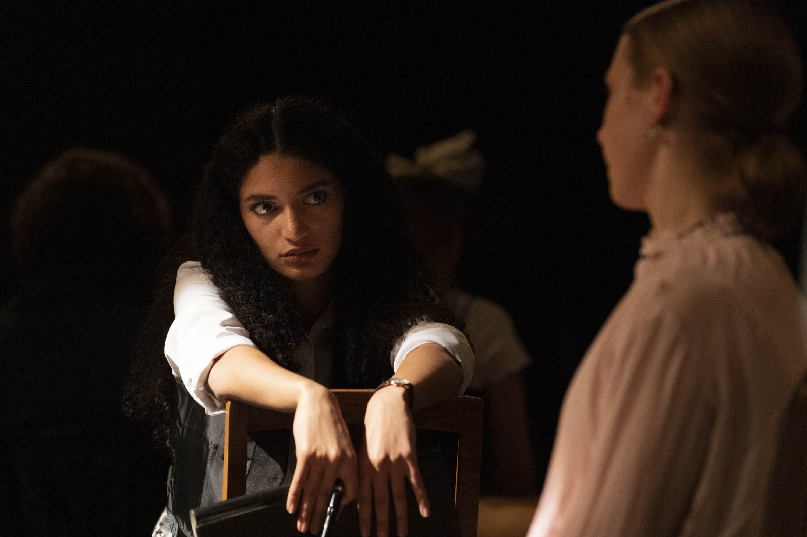

In Sachen Eva Smith
Srdjan Paravac • 4min

Das Stück
«In Sachen Eva Smith» ist eine Zusammenführung aus den Theaterstücken «An Inspector Calls» von J.B. Priestly und «Der Reigen» von Arthur Schnitzler.
In der Originalfassung des Dramas «An Inspector Calls», welches ein wenig an einen Krimi erinnert, geht es um die Befragung der Familie Birling durch den Inspektor Goole. Dieser kommt und berichtet von einer jungen Frau, die sich vermeintlich das Leben nahm. Es werden lang verwahrte Geheimnisse und unerwartete Zusammenhänge aufgedeckt.
Arthur Schnitzler wiederum nimmt in seinem Drama die Form des Reigen-Tanzes auf. In zehn Dialogen beschreibt er, wie Männer und Frauen einander zum Geschlechtsverkehr verführen und gleich anschliessend wieder auseinandergehen. Dabei geht es um die Wiener Gesellschaft um 1900 und deren Moral. In den Dialogen begegnen sich Mann und Frau, quer durch die verschiedenen Gesellschaftsschichten verteilt. Die Paare verbindet jedoch nur die sexuelle Lust.
Beide Dramen spielen im frühen 20. Jahrhundert, als die Frage von Status in allen sozialen Schichten im Zentrum stand. Die Idee für die Zusammenführung der beiden Geschichten kam von unserer Regisseurin, Salomé Im Hof. Sie entdeckte in beiden Stücken ein immer wiederkehrendes Element: die Kreisform in «Der Reigen»und die schlaufenförmige Handlung in «An Inspector Calls».
Brief an das Publikum

Liebes Publikum
Sie halten dieses Programmheft in der Hand, lesen diesen Text und haben die Aufführung unseres Theaterstücks «In Sachen Eva Smith» kurz vor sich. Das freut uns! Die über die letzten paar Monate immer intensiver werdende Vorbereitung für diese Aufführung hat für unsere Klasse, die 2m, wenigstens teilweise das durch coronabedingt fehlende Ausflüge und Lager entstandene Loch gefüllt. Das Projekt half uns, die schon vorhandene gemütlich–freundliche Atmosphäre unserer Klasse weiter zu stärken. Ebenfalls begleitete es uns, als wir neue Gesichter willkommen hiessen. Man könnte sagen, dass die Arbeit an unserer Teateraufführung unsere Klasse als Ganzes recht gut widerspiegelt. Zwei Wochen vor der Premiere feilen andere vielleicht noch etwas an ihrer Aussprache oder treffen letzte Änderungen am Bühnenbild. Wir haben noch nicht einmal ein fertiges Skript. Stresst uns das? Vielleicht. Aber das verdirbt uns nicht den Spass daran, gemeinsam etwas auf die Beine zu stellen und das Resultat stolz zu präsentieren. Eine bessere Unterstützung als unsere geniale Regisseurin Salomé Im Hof hätten wir uns dabei nicht wünschen können. Mit der Mentalität «Der Weg ist das Ziel» setzte Sie mehr Wert darauf, uns als Gruppe zu fördern, als von Anfang an einem durchstrukturierten Plan zu folgen. Das Resultat dieser Herangehensweise werden Sie in Kürze geniessen können.
Wir wünschen Ihnen von Herzen sehr viel Spass dabei!